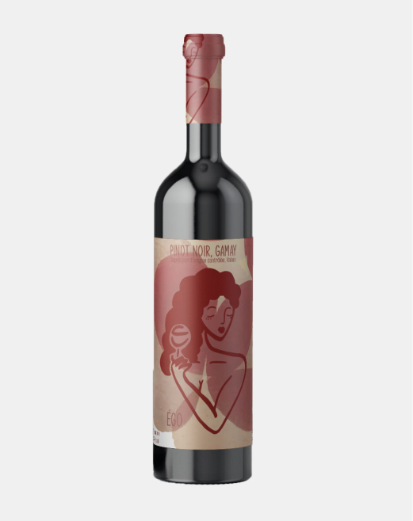

fr


Gewurztraminer
Vin naturel
AOC Valais, Suisse
commander
Cépage :
Gewurztraminer
2022
2018
Provenance :
Vignes situées sur les coteaux de la vallée du Rhône
Vinification :
Macération semi-carbonique pour préserver le fruité et l’acidité du Gamay, associée à une fermentation spontanée avec levures indigènes, typique des vins naturels. Aucun ajout de sulfites, ni filtration, afin de conserver l’expression la plus pure du terroir. Élevage en cuves béton pour une approche non interventionniste, accentuant la fraîcheur et la minéralité.
Notes de dégustation :
Œil : Robe jaune dorée, brillante et intense, parfois avec
des reflets cuivrés.
Nez : Très expressif et complexe, avec des arômes de
litchi, de rose, de fruits exotiques (mangue, ananas) et
des notes épicées (gingembre, poivre blanc).
Bouche : Ample, ronde et généreuse, souvent légèrement
douce avec une belle intensité aromatique. Finale longue
marquée par des saveurs florales et épicées.
recommandation

Pinot Noir
Vin naturel
AOC Valais, Suisse
plus de vin
Contact
Horaire
Newsletter
inscription